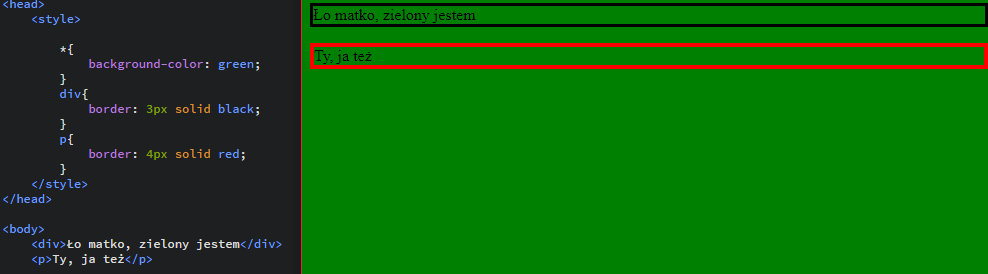
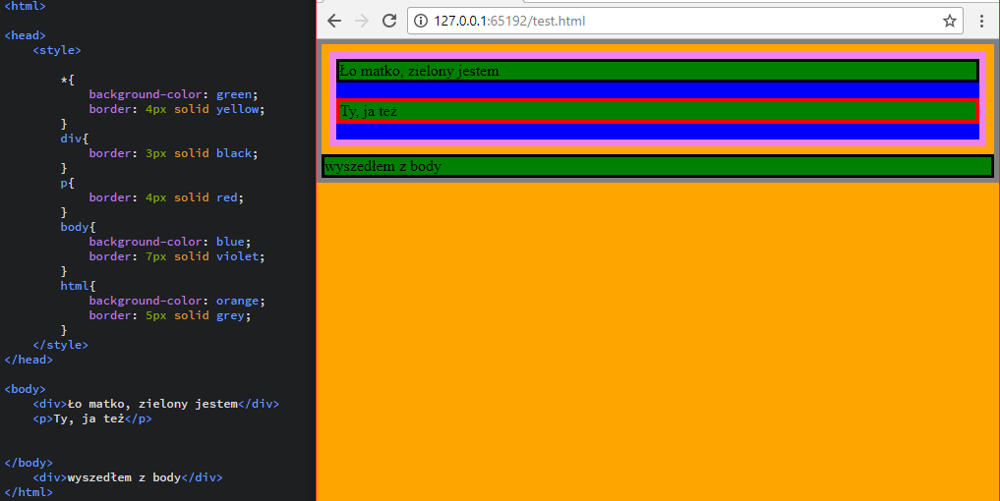
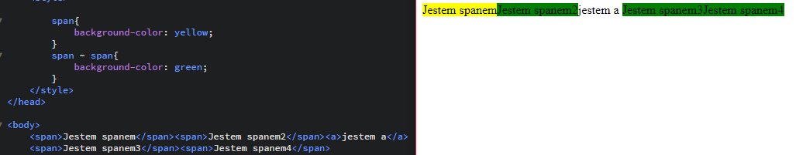
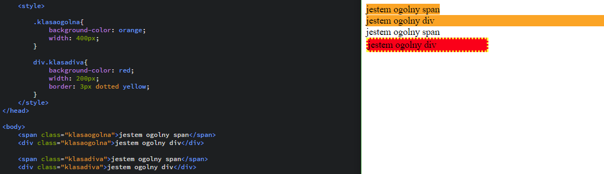
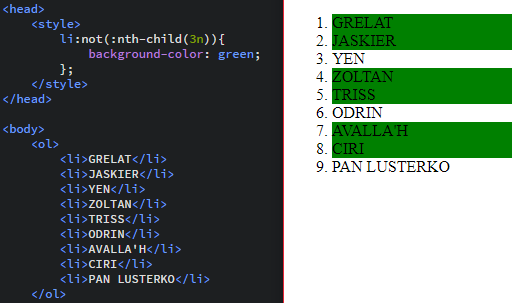

Link do pobrania prezentacji z zajęć nr 7: Prezentacja 7
Na pierwszych zajęciach z CSS'a dowiedzieliśmy się już czym są selektory jednak poznaliśmy tylko kilka ich możliwości. Wiemy, że selektorem może być nazwa znacznika, elentualnie atrybut class i id. Jednak selektorów jest więcej i mają wiele ciekawych możliwości.
Należą do nich oczywiście selektory znaczników czyli p, a h1 itd. Warto też wspomnieć o selektorze *{}, który jest selektorem uniwersalnym. Style w takim selektorze będą wyświetlane we wszystkich elementach strony.
Poniżej mamy ciekawy przykład ostylowania takich elementów jak body czy nawet html
Zauważmy jak małą częśc naszego dokumentu tak naprawdę stanowi body! Zasięg tego elementu kończy się tam gdzie kończą się pozostałe elementy. Dużo większy zasięg ma znacznik html, który choć obramował tylko treść to jednak kolor tła jest ustawiony na całej witrynie. Jeśli usuniemy stylowanie znacznika html co strona nie pokryje się kolorem body, tylko kolorem selektora *
Ufam, że większość z Was miała już dziedziczenie np. klas na przedmiotach informatycznych. Dla przypomnienia jednak dziedziczenie polega na tym, że elementy, które znajdują się wewnątrz innego elementu przyjmują automatycznie jego cechy. To niezwykle istotne podczas ich stylowania. Załóżmy, że mamy div'a a wewnątrz niego inne elementy, którym chcemy nadać style
Jeśli przy selektorze dopiszemy nazwę innego to wszyscy potomkowie tego elementu odziedziczą te cechy. Zarówno dzieci, wnuki, prawnuki...
Przykład niemal identyczny jednak zamiast div span przy stylach mamy zapis div > span co oznacza, że styl zostanie przypisany jedynie dzieciom elementu div. To ważne aby rozumieć różnicę między dzieckiem elementu, a jego potomkiem
Jeżeli między dwoma selektorami postawimy znak + to będzie oznaczało, że style otrzymuje "ten drugi", czyli po prawej brat.
Bardziej "roszczeniowym" sposobem jest zamiania znaku + na ~. Oznacza to, że nie tylko brat po prawej będzie ostylowany, a wszyscy bracia po prawej otrzymają styl (nawet jeśli rozdziela je inny element!)
Powiem uczciwie, że to rozwiązanie może być mało intuicyjne i rzadko stosowane na początku niemniej warto wiedzieć, że tak można. Do tej pory stosowaliśmy selektory dla dwóch atrybutów - id i class. Można to zrobić także dla innych stosując notacje z poniższej tabelki:
| Selektor | Opis | Przykład użycia |
|---|---|---|
| Z[atr] | Ostylowanie dla znaczników Z z atrybutem atr | link do przykładu |
| Z[atr="w"] | Ostylowanie dla znaczników Z z atrybutem atr, którego wartość wynosi dokładnie w | |
| Z[atr~="w"] | Ostylowanie dla znaczników Z z atrybutem atr, którego jedna z wartości wynosi dokładnie w | |
| Z[atr|="w1"] | Ostylowanie dla znaczników Z z atrybutem atr, wartości rozpoczynają się od w1 | |
| Z[atr^="w"] | Ostylowanie dla znaczników Z z atrybutem atr dla których wartośc zaczyna się od w | |
| Z[atr$="w"] | Ostylowanie dla znaczników Z z atrybutem atr dla których wartość kończy się na w | |
| Z[atr*="w"] | Ostylowanie dla znaczników Z z atrybutem atr dla których wartość zawiera w |
Małe przypomnienie o selektorach id i class. Ostatnio kożystaliśmy w nich w taki sposób, że jeśli jakiś element miał id, lubklasę to nie miało znaczenia czy był divem czy nie. Jednak jeśli przed . w przypadku klas i przy # w przypadku id wstawimy nazwę znacznika, to ograniczymy ilość elementów, które te selektory obejmują do konkretnych znaczników
Pod tą dziwnie brzmiącą nazwą możemy odkryć ciekawy sposób na dodanie własności, treści przed i po naszym elemencie. Pseudoelement w teoretycznie nie należy do zasięgu elementu, a jest jedynie takim doczepionym dodatkiem. Selektory pseudoklas zapisujemy po podwójnym dwukropku i wyróżniamy następujące:
| znacznik::first-line | pierwsza linia treści znacznika "znacznik" |
| znacznik::first-letter | pierwsza litera treści znacznika "znacznik" |
| znacznik::before | pseudoelement wstawiany przed wartością znacznika "znacznik" |
| znacznik::after | pseudoelement wstawiany po wartości znacznika "znacznik" |
Omówmy sobie przykład - myślę, że działanie first-line i first-letter jest dość oczywiste. Wydaje mi się, że ta druga własność może być bardziej przydatna w wypadku gdy chcemy zrobić w naszym akapicie inicjał czyli ozdobną pierwszą literę (stosowaną m.in. już w średniowieczu). Pseudoelementy mają dużo różnych zastosowań. Np. możemy dodać do znacznika blockquote cudzysłów. którego domyślnie nie ma, a dodatkowo możmy mu zmienić kolor czy dowolnie inaczej przekształcać. Oprócz tego możemy ładnie ostylować np. nagłówek dodając mu poziome linie z góry i z dołu. Sam pseudoelement ::before możemy np ustawić jako ozdobnik do znacznika li aby na własny sposób udekorować elementy listy. Jeśli chodzi o symbole specjalne do CSS'a to nie są one takie same jak w HTML'u. Można je znaleźć TUTAJ. Dodatkowo elementy ::before i ::after posiadają swój własny selektor content dzięki któremu możemy przypisać mu jakąś wartość (słowa, symbole itd.).
Z reguły odnosiliśmy się do elementu za pomocą jego klasy bądź id. Jednak powedzieliśmy już przy dziedziczeniu o hierarchii elementów, czyli niektóre elementy mają swoich synów, braci i rodziców. Może się zdarzyć, że chcialibyśmy ostylować zawsze dziesiąty element danej listy. Moglibyśmy się odnieść do jego id ale co jeśli dopiszemy coś do listy, a dalej chcemy aby to dziesiąty element był ostylowany? Co jeśli chcemy ostylować co drugi element? Tu przychodzą z pomocą właśnie pseudoklasy
Spróbujmy sobie wyobrazić nasz dokument jako drzewo (rozumiane jako struktura danych). Każdy element ma swojego rodzica oprócz jednego - którego nazywamy korzeniem. Co jest korzeniem dokumentu html? Właśnie znacznik html. Więc zapis div:root{style} jest równoznaczny z html{style}. Po co jest ten korzeń? CSS jest również wykorzystywany do plików XML, których korzeń może być inny. Warto pamiętać jednak czym korzeń jest dla lepszego zrozumienia budowy naszego pliku html.
Tu właśnie mówimy o przypadkach kiedy chcemy ostylować np. co drugi, co trzeci element listy.
| E:nth-child(n) | Załóżmy, że element E jest dzieckiem jakiegoś elementu X. Chcemy ostylować dzieci elementu X. Jeśli wpiszemy za n wartość 4n wtedy co czwarty element będący dzieckiem X będzie ostylowany. A co jeśli chcielibyśmy stylować co piąty element rozpoczynając od 6stego? Wystarczy zapis 5n+6 |
|---|---|
| E:nth-last-child(n) | Schemat praktycznie taki sam jak poprzednio ale tym razem rozpoczynamy od ostatniego elementu |
| E:nth-of-type(n) | Załóżmy, że nie chcemy stylować dzieci, a np. chcemy ostylować np. co drugi element div, albo co drugi element jakiejść klasy. Wtedy korzystamy właśnie z tej metody. |
| E:nth-last-of-type(n) | Tak samo jak w przypadku nth-last-child. Zaczynamy po prostu od ostatniego elementu |
Selektory dotyczące konkretnych nie cyklicznych dzieci
| E:first-child | Element E jest pierwszym dzieckiem swojego rodzica |
|---|---|
| E:last-child | Element E jest ostatnim dzieckiem swojego rodzica |
| E:only-child | Element E jest jedynym dzieckiem swojego rodzica |
Podobnie jest w przypadku typu, ale tutaj mamy do czynienia z braćmi
| E:first-of-type | Element E jest pierwszym bratem typu E |
|---|---|
| E:last-of-type | Element E jest ostatnim bratem typu E |
| E:only-of-type | Element E jest jedynym elementem typu E |
Strona html rozpoznaje czy użtkownik wszedł w jakiś link czy nie. Na pewno kojarzymy sytuację gdy kiedyś linki na wielu stronach były niebieskie a po odwiedzeniu stawały się fioletowe i wiedzieliśmy, że na tej stronie już byliśmy
| E:link | w przypadku nieodwiedzonego linku |
|---|---|
| E:visited | w przypadku odwiedzonego linku |
Zdarza się że po najechaniu na przycisk ten zmienia nagle kolor, albo się powiększa. Takie cuda można uzyskać za pomocą selektorów takich jak:
| E:active | Jeśli element ma jakąś cechę (np. odsyłanie) to wtedy nasz styl zadziała w momencie aktywacji tej cechy |
|---|---|
| E:hover | Style pojawią się gdy najedziemy na element myszką |
| E:focus | Wykorzystywane w np. polach tekstowych. Jeśli na taki pole klikniemy to wtedy wykonają się nasze style |
Negacja jest w logice szeroko wykorzystywana. HTML tej cudownej właściwości nam nie poskąpił i możemy za pomocą :not(selektor) odwrócić nasze selektory. Więc jeśli weźmiemy nth-child(3n) to ostylowane zostaną wszystkie elementy z wyjątkiem co trzeciego.
Proszę o modyfikację TEJ TABELI w której:
- co drugi rząd będzie miał jasnoniebieskie tło, a pierwszy niebieskie
- jeden z elementów td będzie zawierał link, który kiedy jest nieodwiedzony jest zielony, a gdy jest odwiedzony staje się fioletowy
- dwa z elementów td będą posiadały atrybut title i bedą miały podkreślenie nad tekstem
Proszę też dokleić pod tabelą wybrany tekst i dodać mu wcięcie oraz ustawić inicjał (ozdabiamy wg własnej fantazji liczę na Waszą kreatywność - warto skorzystać z cieni i ogólnie materiałów z poprzednich zajęć)
Proszę utworzyć w repozytorium katalog o nazwie "PRDOM5", a w nim plik html, w którym należy:
- użyć selektora uniwersalnego (może nadawać kolor tekstu na czerwony)
- umieścić listę (3 elementy) numerowaną, a w niej listę (3 elementy) nienumerowaną, a w tej drugiej wykorzystując dziedziczenie nadać obramowanie elementom li zielone obramowanie
- dodać akapit tekstu, którego pierwsza linia będzie miała inną czcionkę (może być użyta z Google Font) niż pozostały tekst, a pierwsza literka będzie inicjałem (podobnie jak w ćwiczeniu styl możecie wybrać sami)
- umieścić nagłówek nad tym akapitem i prosze mu nadać pseudoklasy before i after. Można ich użyć podobnie jak w przykładzie na zajęciach, lub ostylować wg włąsnego pomysłu tak, aby nagłówek wyglądał ciekawie
- umieścić tabelę w której co trzeci wiersz będzie miał pomarańczowe tło, a elementy td będą odnośnikami, o różnych kolorach w przypadku odwiedzonych i nieodwiedzonych
{kind=link}
{kind=link}
{kind=link}
{kind=link}
{kind=link}
{kind=link}
{kind=link}
{kind=link}
{kind=link}
{kind=link}
{kind=link}
{kind=link}
{kind=link}